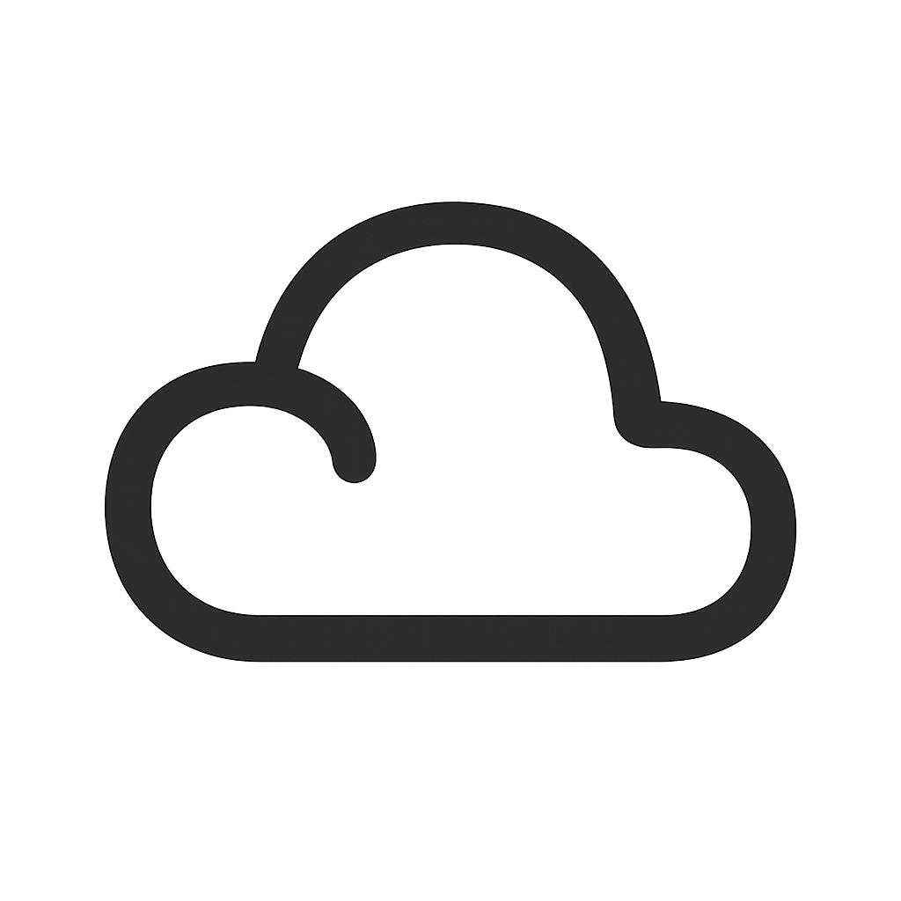

(Hiclipart, 2026)Building digital infrastructure and securing the future
I am passionate about cloud computing and cybersecurity, and I am deeply committed to making the digital world a safer place for everyone. I began my journey at Northwest Vista College studying cybersecurity, later transitioning into cloud computing as my interests evolved. Today, I continue to sharpen my skills by building and maintaining my homelab, building cloud-based projects, and learning how to pentest to build security knowledge. I love to constantly experiment and learn whenever I can.
My path into technology started with freeCodeCamp’s HTML course. I fell in love with it immediately and knew I wanted to learn more. What began as basic HTML knowledge quickly grew into something much bigger. From knowing only HTML, I went on to earn my first certification — CompTIA Security+ thanks to Northwest Vista. That achievement gave me the confidence to believe I could succeed in this field, even when I still had so much to learn. Since then, I’ve earned several more certifications and have enjoyed every step of my journey in the field.
Currently I am employed at Microsoft as a Datacenter Technician where I support the physical infrastructure that powers global cloud services. I enjoy designing secure cloud environments, automating deployments, understanding how infrastructure operates at scale, and penetration testing for fun. My long-term goal is to design secure, scalable cloud solutions as a Cloud Architect or Cloud Security Architect.
Continuation from my work as an Intern at Microsoft
Kept the world running to achomplish more
Made sure the schools technology gave students the best learning experience
Kept the datacenter and networking lab up for students to learn
Deployed and experimented with Proxmox to build vulnerable environments for penetration testing and multi-VM deployments, simulating real-world enterprise user administration, privilege management, and attack scenarios.
I used specialized software on my Raspberry pi to configure my ad blocker. I also use tailscale to connect to it so I can use it when I am not in the same network
I made this profolio website to show the world who I am and skills. I used AWS to host the website and keep track of the visitors. I also used Github Actions to have a clean CI/CD enviroment.
Built an end-to-end AWS data analytics pipeline that transformed raw fisheries data into Parquet format using Python, AWS Glue, and Amazon S3, then queried the processed data with Amazon Athena to generate business insights.
Current GPA: 3.8/4.0. Focused on cloud computing technologies, including virtualized infrastructure, Linux administration, networking, scripting, and cloud security fundamentals. Developed hands-on skills through lab-based coursework and cloud projects emphasizing deployment, monitoring, and system security. Additional Experience in data analytics and machine learning with AWS and Python. Former member of cloud computing, cybersecurity, and networking clubs.